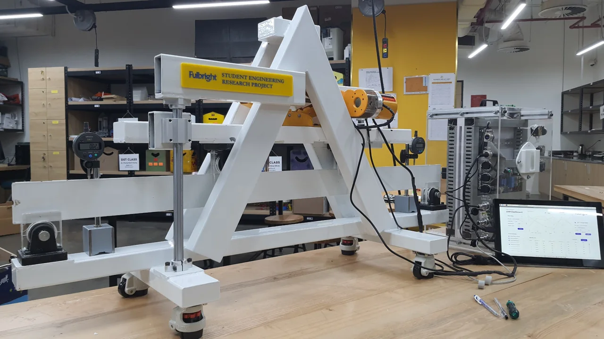
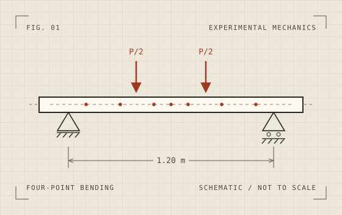
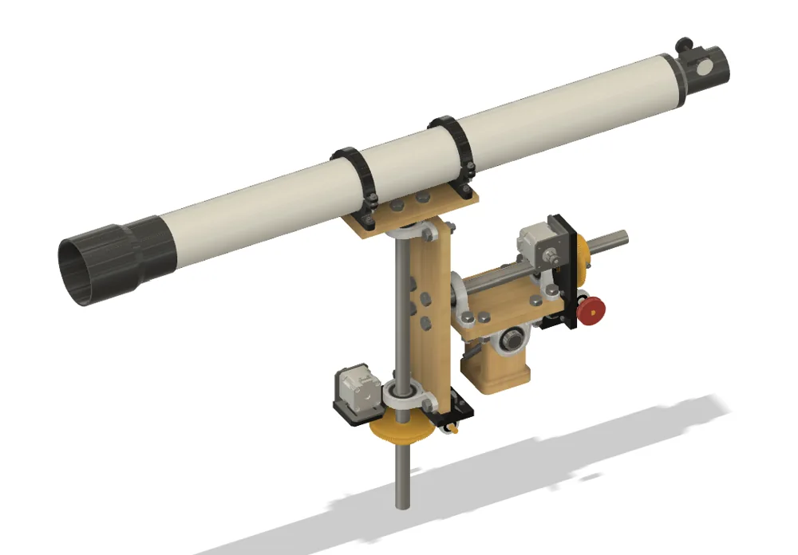
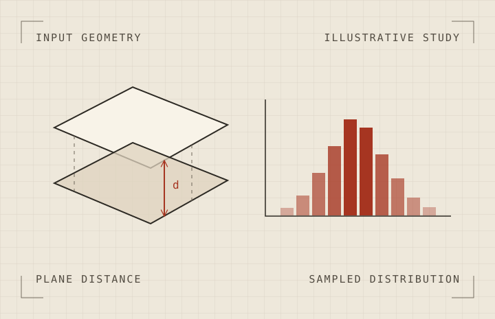

Finding damage with sparse strain measurements
An instrumented four-point bending rig and a physics-informed model for estimating where a beam has lost stiffness.
PERSONAL ENGINEERING PORTFOLIO
Mechanical design & experimental engineering
I’m a mechanical designer in Vietnam. I build things, test them, and write software to make sense of what I measure.

01 / PROJECTS
Projects across mechanical design, lab testing, and engineering software.

An instrumented four-point bending rig and a physics-informed model for estimating where a beam has lost stiffness.

A telescope-mount redesign built around precision gearing, adjustability, and a prototype I could fabricate.

A personal prototype for exploring how part tolerances contribute to variation in an assembly.
02 / EARLIER WORK
Earlier builds from school and university, from pneumatics to electronics.
03 / BACKGROUND
I started building engineering projects in high school. One of my first was a motorized telescope mount. I came back to that design in university with better tools and a clearer idea of what I wanted to improve.
Today I’m a Mechanical Designer at Bosch Automotive R&D Center Vietnam. I’m interested in how mechanical design, sensing, and computation can work together to make automotive and aerospace systems more reliable.
Bosch Automotive R&D Center Vietnam
I work on mechanical drawings, design documentation, and product improvement in automotive R&D. My earlier experience at Bosch also included test-bench work and engineering data analysis.
Fulbright University Vietnam
I graduated with honors. My capstone on physics-informed beam damage identification earned Capstone Honors.
Fulbright University Vietnam
I contributed to the beam-bending research apparatus and supported hands-on coursework in fabrication, electronics, and measurement.